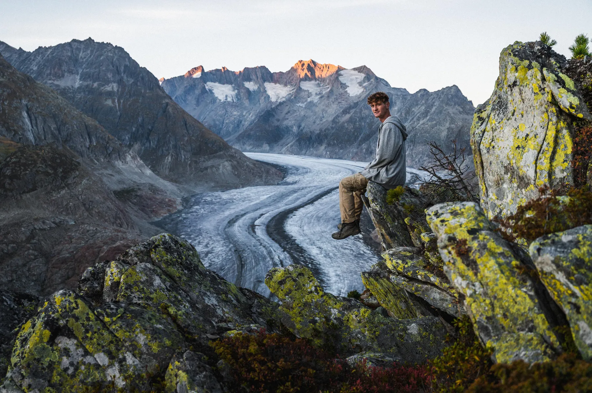

Photo · Louise PipetSWITZERLAND'S LARGEST, FOR NOW
The biggest glacier in the Alps, a 23-kilometre river of ice you can walk beside. Visibly shrinking year over year.
Start from Bettmeralp or Fiescheralp. Cable cars bring you up fast. The classic viewpoint is Eggishorn (2,927m), reached by another lift, for the full sweep of the glacier curving south. On a clear day you can see the Matterhorn on the horizon.
Drone shots are where this spot comes alive. Check local drone rules (parts sit inside a UNESCO protected zone) and fly respectfully. If you would rather stay grounded, the Aletsch Panorama trail runs along the ridge for a few hours of uninterrupted views.